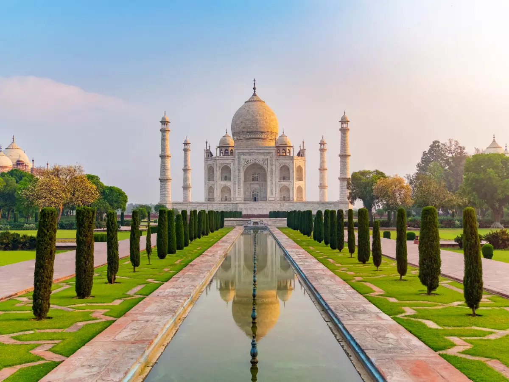
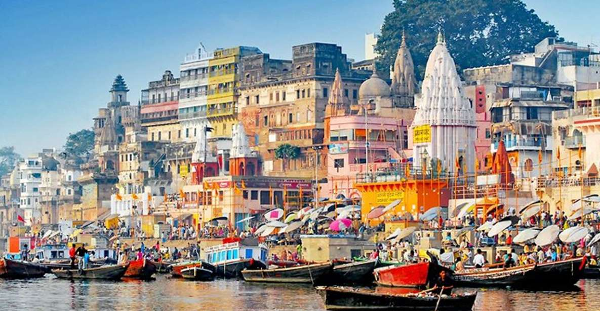
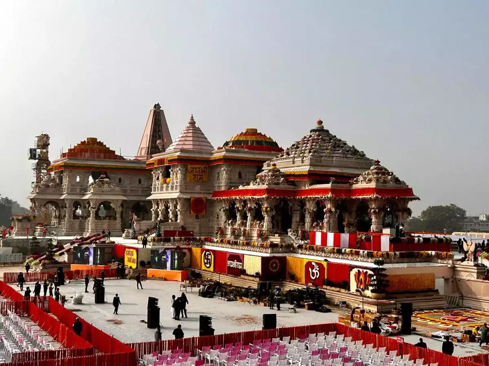
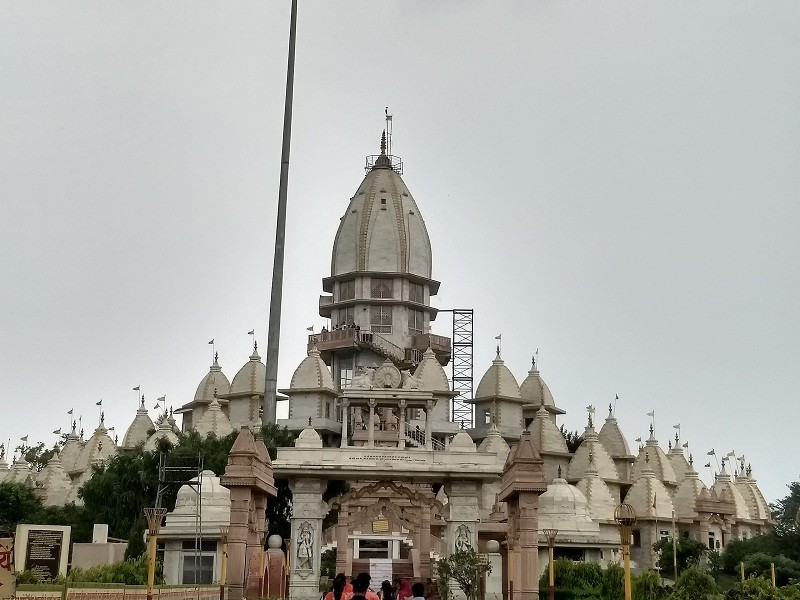

Taj Mahal
Located on the banks of River Yamuna in Uttar Pradesh, Agra is a popular tourist destination as it is home to one of the 7 wonders of the world, the Taj Mahal. It is a sneak peek into the architectural history and legacy of the Mughal empire with two other UNESCO World Heritage Sites Agra Fort and Fatehpur Sikri. History, architecture, romance all together create the magic of Agra, and hence, makes for a must-visit for anyone living in or visiting India.
Located on the banks of River Yamuna in Uttar Pradesh, Agra is a popular tourist destination as it is home to one of the 7 wonders of the world, the Taj Mahal. It is a sneak peek into the architectural history and legacy of the Mughal empire with two other UNESCO World Heritage Sites Agra Fort and Fatehpur Sikri. History, architecture, romance all together create the magic of Agra, and hence, makes for a must-visit for anyone living in or visiting India.
Varanasi
World's oldest living city, Varanasi - also known as Kashi (City of Life) and Benaras, is the spiritual capital of India. It is one of Hinduism's seven holy cities. The old city of Varanasi lies along the western banks of the Ganges, spread across a labyrinth of narrow galis. Be prepared to walk on foot and encounter some holy cows! Temples at almost every turn engulf Varanasi but the Kashi Vishwanath Temple is the most visited and the oldest of the lot. Benaras is known as the city of Lord Shiva for a reason, and rightfully so.
The best time to visit Varanasi is during the winter months (October to March), when the weather is pleasant, and the city is vibrant with festivals and cultural events.

Lucknow
The capital and the largest city of Uttar Pradesh, Lucknow, situated on the banks of river Gomti, welcomes you with a heartwarming note of "Muskuraiyein, kyunki aap Lucknow mein hai". A city of kebabs and nawabs, of architecture and history, of literature and culture – that is Lucknow in a nutshell for you. From a slice of rich colonial history to modernized museums, this artistic hub of Awadh region beautifully brings together the opulence of a glittering past and the simplicity of a modern city.
The people of Lucknow are known for their courtly manners and endearing 'pehle aap' (you first) culture, which always leaves behind a smile on the faces of its visitors.
"Prayaga- The city of offerings"
Prayagraj, formerly known as Allahabad, is a city located in the Indian state of Uttar Pradesh. Reminiscent of all that is spiritual and sacred in Hinduism, Prayagraj is famous for Triveni Sangam or the meeting point of three rivers - the Ganga, the Yamuna, and the Saraswati. Built on the site of the ancient town of Prayag, Prayagraj has, since time immemorial, held the largest Hindu gathering on the banks of the Sangam - the Maha Kumbh Mela. While the Sangam city is often passed over for more travel-friendly cities, there is a lot to Prayagraj besides just its religion.Reminiscent of all that is spiritual and sacred in Hinduism, Prayagraj is famous for Triveni Sangam spirtual and scared in Hindustan.

Ayodhya
Often referred to as the birthplace of Lord Rama, Ayodhya is deeply entrenched in Hindu mythology and spirituality. Nestled along the banks of the sacred Sarayu River in Uttar Pradesh, Ayodhya stands first among the seven most sacred pilgrimage sites for Hindus. The name "Ayodhya" itself is deeply intertwined with the Ramayana in which it was known as the capital of the ancient Kosala Kingdom. The Ramayana immortalized Ayodhya through its association with the epic tale of Lord Rama. This ancient city holds immense significance for millions of Hindus, serving as a pilgrimage site where devotees pay homage to Lord Rama and seek spiritual solace.
Nestled along the banks of the sacred Sarayu River in Uttar Pradesh, Ayodhya stands first among the seven most sacred pilgrimage sites for Hindus.Often referred to as the birthplace of Lord Rama, Ayodhya is deeply entrenched in Hindu mythology and spirituality.
National Chambal Wildlife Sanctuary Tourism
Just a 1 hour drive down from Agra, this is a perfect destination for the wildlife enthusiasts. It is a habitat of some of the most endangered species, but the main attraction here are, Gharial, Red crowned turtles, Gangetic Dolphins, Indian skimmers, among others.
The beautiful sanctuary is surrounded by the Chambal river, known to be one of the cleanest river of India. It provides you a combination of a unique and unpolluted habitat, abundant wildlife and amazing landscapes, medieval temples and magnificent ancient ruins, animal fairs and naga sadhus, far far away from the chaos of the city

Hastinapur
Hastinapur is an ancient town which was the centre to the glorious tales of the epic Mahabharata. Situated on the banks of Ganga near Meerut in UP, Hastinapur is also the birth place of three Jain Teerthankara, and it has become an important centre of pilgrimage for the Jains.
It is fascinating in its own way and as it has lived through ages, it has also kept the spirit of mythology alive. Being an important part of the epic, every nook and corner of the city has been a part of it in some way and thus the locals have fascinating stories to share.
Hastinapur is an ancient town which was the centre to the glorious tales of the epic Mahabharata. Situated on the banks of Ganga near Meerut in UP, Hastinapur is also the birth place of three Jain Teerthankara, and it has become an important centre of pilgrimage for the Jains.
It is fascinating in its own way and as it has lived through ages, it has also kept the spirit of mythology alive. Being an important part of the epic, every nook and corner of the city has been a part of it in some way and thus the locals have fascinating stories to share.